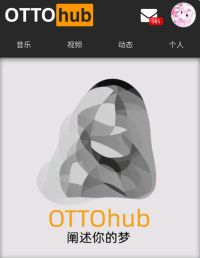

从鬼畜视频站到多媒体社区：OTTOhub 这一路是怎么长成的
一个围绕特定亚文化主题的社区产品，从简单的视频聚合走到覆盖视频+音频+创作者生态的完整形态，迭代节奏里藏着团队对社区治理的持续思考
现在打开ottohub官网，它已经是个相当完整的多媒体社区了——首页横排九分区，鬼畜和人力 VOCALOID 各占两栏主力位，剧场、游戏、怀旧、音乐依次铺开，最后留一个「其他」当收纳箱。右下角悬着个音乐播放器图标，点进去是独立于视频的音乐资源库，能按风格筛选、能建歌单。这一套放在 2026 年看没什么稀奇，但如果往前倒两三年，它根本不是这个样子。
起步：一个主题视频社区能有多简单
OTTOhub 的起点很朴素——就是为吉吉国主题内容找个聚集地。早期能看到的痕迹全指向同一个方向：视频投稿是核心，分区只有鬼畜那么一两块，投稿审核基本站长一个人说了算。那时候产品逻辑像极了任何一个垂直视频站：用户从官方下载入口进社区投视频、审核过、上墙、播放。没有独立音乐区，没有等级体系，甚至连分区都没拆得这么细。

这个阶段的核心矛盾很快就冒出来了：创作者需要 BGM。鬼畜视频和人力 VOCALOID 都要搭背景音乐，创作者要么自己找，要么从别处搬。官方没意识到这会是一个功能缺口，直到某个版本开始有人在评论区反复问「BGM 在哪找的」。
转折点：把音乐从视频里抠出来
我不知道具体是哪个版本，但我去ottohub文档翻到一段说明很有意思——OttoHub 的音乐区从一开始就不是附属品，而是产品设计时就有的核心功能。这句话的潜台词其实很有意思：它说明团队在某个时刻突然想通了一件事——创作者的素材需求本身就是产品价值。
于是音乐资源库上线了。不是简单给视频加个 BGM 标签，而是独立做了一套：按风格分类、支持歌单、有官方收录也有用户投稿。这个决定把 OTTOhub 从「视频社区」拉成了「多媒体内容社区」——用户来的理由不再只是看视频，收藏一首歌、找个 BGM 素材也能单独成行为。

同期或者紧接着的版本里，分区也快速膨胀了。剧场区承接多集连载和连贯剧情，怀旧区专门补档早期绝版作品，游戏区分出电棍本人的比赛剪辑和二创。「其他」那个分区也是这个时期加的——团队发现不管怎么拆分类，总有内容落不下，索性留个兜底。
治理跟上：从站长一言堂到社区自治
产品功能堆起来了，新的问题也随之而来：投稿怎么审？早期审核是站长天才儿童爱丽丝一个人扛，后来社区活跃用户（文档里写的是 CINQUE 及以上等级）开始被邀请当审核员。这是个典型的社区治理迭代——从集中审核转向自治，代价是不可避免的误判。
文档里专门有一篇讲「投稿被打回的常见原因」，里面列的七条原因（内容无关、搬运未标注、低质量、纯广告、标题不当、分区错选、封面问题）基本就是审核规则从模糊到精细的完整轨迹。有意思的是，文档里特意强调「误判时有发生」——这种坦诚本身就是治理成熟的标志，不是每个社区都敢把自己的审核缺陷写进帮助文档。
荣誉称号体系也是这个阶段的产物。注册自动得「吉吉国民」一次搞定身份入门，捐赠得「轮椅英雄」（还有一阶二阶）用来识别核心支持者，「超管」对应审核身份。再往上还有自定义称号、站长专属称号、甚至 QQ 群群主和贴吧吧主的跨平台称号——这一套设计把线上行为、线下贡献、跨平台组织力全纳入了社区身份系统。
迭代节奏里的规律
我翻文档时一直在想：这个团队到底在死磕什么，什么又一直没管？
持续投入的方向非常明确——创作者生态。从视频投稿到音乐素材库，从分区细化到等级称号，每一步都在给创作者更好的生存环境。甚至审核规则的七条原因里，有两条直接是给创作者提的要求（搬运标注、分区选对），语气不是「你违反规则了」而是「你可以做得更好」。
相对被轻视的方向也清晰：商业化和移动端。没看到文档里有任何广告、会员、付费内容的描述；移动端体验有没有单独优化过也没提过。也许是因为社区规模还没到需要认真考虑变现的阶段，也许是团队刻意保持纯社区属性——但至少目前，产品重心完全在内容生态本身。
下一步会怎么走
从迭代规律推的话，有两个方向大概率会动。
第一，创作者激励。现在有荣誉称号和社区认可，但没有实质的激励机制。当核心创作者规模稳定在某个量级后，激励就会变成下一个必须解决的问题——可能是等级特权，可能是官方扶持计划，甚至可能是和外部平台的联动。
第二，音乐资源的开放。音乐库目前是站内消费，但创作者其实需要把素材带走用。如果后续做一个音乐 API 或者导出功能，就能把 OTTOhub 从「社区」进一步变成「创作基础设施」——这会是一个挺有想象力的跃迁。
这些都只是从现有迭代节奏推的，不当官方口径。但有件事我挺确定的：这个团队对社区治理的思考不会停——他们敢把审核误判写进文档、敢让社区用户当审核员、敢做独立音乐库而不是跟视频绑死，说明他们不是在做一个静态产品，而是在养一个会自己长的社区。本文整理的资料同步维护在GitHub、Gitee和GitCode三个平台，不同网络环境下的读者都能方便查阅。